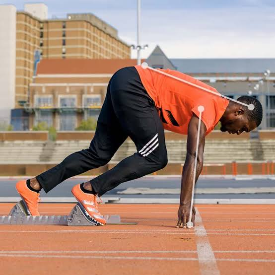

My Events
- 100 meters
- One straight line and about eleven seconds of work. There is no time to fix a mistake, so the start matters more here than in any other race.
- 200 meters
- Half a lap that begins on the curve with a staggered start. It rewards runners who can hold their top speed after the turn, when their legs start to tie up.
- 4x100 meter relay
- Four runners, one baton, and three handoffs at full speed. It is the closest track comes to a team sport, and it is my favorite event to run.

How a Sprint Works
A 100 meter race looks like one burst, but it has four separate phases, and each one is trained on its own.
- The start. The runner pushes out of the blocks at the gun, keeping the body low and the first steps short and powerful.
- The drive phase. For roughly the first 30 meters the runner stays leaned forward and builds speed with every step.
- Top speed. The runner rises to an upright position and reaches maximum velocity somewhere past the halfway mark.
- The finish. Nobody speeds up at the end of a sprint. The winner is usually the runner who slows down the least.
The Relay Handoff
In the 4x100 the baton has to change hands inside a 30 meter exchange zone. A pass outside the zone disqualifies the whole team. The outgoing runner takes off before the baton arrives and reaches back without looking, trusting the incoming runner to place it in the open hand. A good exchange keeps the baton moving at nearly full speed, which is how a relay team can beat four faster runners who pass it badly.

Beyond the Sprints
I also have a cross country background, which is the opposite kind of running: miles of steady effort instead of seconds of all-out speed. I log my runs on Strava, and one of my long term goals is to finish a marathon, all 26.2 miles of it. Sprinting taught me how to commit completely to a short effort. Distance running is teaching me how to stay with a long one.